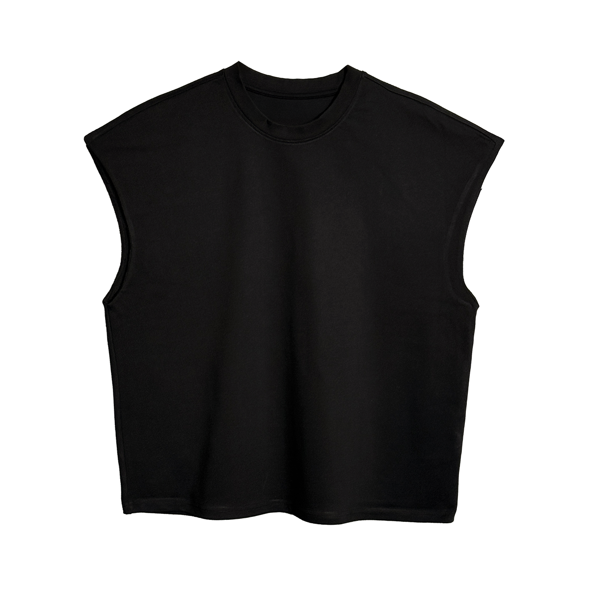
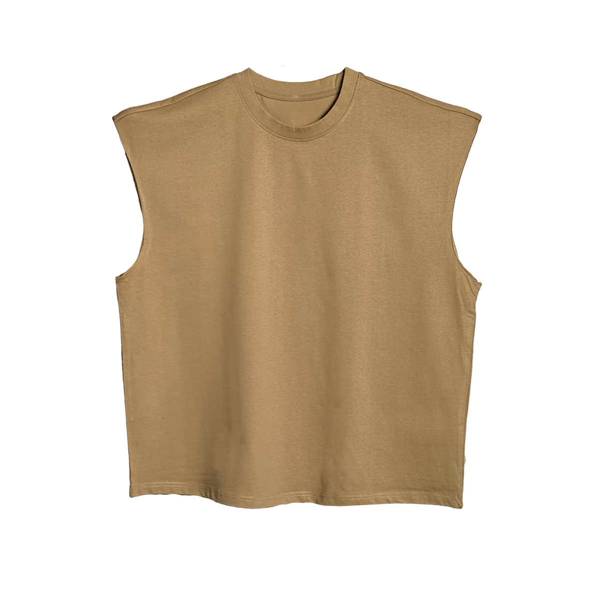

Czech Virus® Merch
Oversized Tílko Czech Virus®
Oversized tílko Czech Virus® je tvoje zbraň pro letní tréninky a maximální volnost pohybu. Vyrobeno ze 100% prémiové bavlny 300g s masivním sitotiskem na zádech.
Bez rukávů znamená žádné omezení, jen čistý výkon. Ať už řežeš bicáky, drtíš ramena nebo jen předvádíš svůj hard work – tohle tílko mluví za tebe.
.jpg)
Proč zvolit
Oversized Tílko Czech Virus®?
Detaily & zpracování
Pro tvé nejtvrdší tréninky
Tílko není náhoda. Když teplota stoupá a ty drtíš sérii za sérií, potřebuješ maximum ventilace a volnosti. Žádné rukávy, žádné překážky – jen ty a železo.
Sitotisk na zádech umístěný 12 cm od průkrčníku je navržen pro maximální vizuální dopad. Když odejdeš z rackové pozice, každý ví, kdo právě trénuje. 300g bavlna zajišťuje, že tílko drží tvar a vypadá ostře, i když ty jsi totálně vyřízený.
Tohle není "gym fashion". Tohle je výbava pro ty, co berou trénink vážně – každý den, bez výmluv.
.jpg)
Pohled zblízka
Tílko v akci
.jpg)
.jpg)
.jpg)
Najdi svou velikost
Tabulka velikostí
Oversized střih vypadá skvěle na každém. Zkontroluj si rozměry a vyber velikost, která ti bude dokonale sedět.
| Velikost | M | L | XL | XXL |
|---|---|---|---|---|
| A (šířka) | 75,5 cm | 77,5 cm | 79,5 cm | 81,5 cm |
| B (délka) | 67,0 cm | 70,0 cm | 73,0 cm | 78,0 cm |
Dvě varianty
Vyber si svou barvu
Obě varianty mají identické složení a zpracování. Černá pro hard look, béžová pro jemnější, ale stejně aggressive vibe.

Černá

Béžová